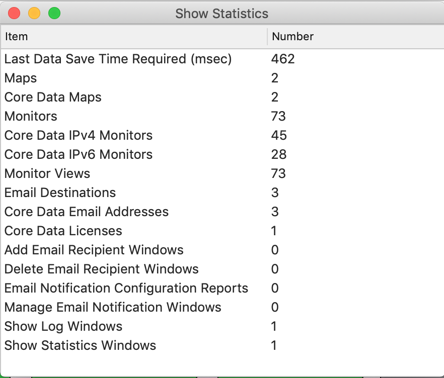

Show statistics
The Reports -> Show statistics menu item shows statistics regarding the Network Mom Availability application itself. These can be useful when submitting reports to feedback@networkmom.net. In particular, because Network Mom Availability is meant to be a “long running application”, while developing the application we paid particular attention to memory leaks and CPU consumption over long periods.

https://networkmom.net feedback@networkmom.net Copyright 2019 Network Mom LLC